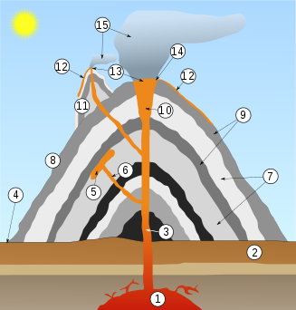

Un volcán (del nombre del dios mitológico romano Vulcano) es una estructura geológica por la que emerge el magma que se divide en lava y gases provenientes del interior de la Tierra. El ascenso del magma ocurre en episodios de actividad violenta denominados erupciones, que pueden variar en intensidad, duración y frecuencia, desde suaves corrientes de lava hasta explosiones extremadamente destructivas. En ocasiones, los volcanes adquieren una forma cónica por la acumulación de material de erupciones anteriores. En la cumbre se encuentra su cráter o caldera.
Por lo general, los volcanes se forman en los límites de las placas tectónicas, aunque existen los llamados puntos calientes, donde no hay contacto entre placas, como es el caso de las islas Hawái.
Los volcanes pueden tener muchas formas y despedir distintos materiales. Algunas de las formas más comunes son el estratovolcán, el cono de escoria, la caldera volcánica y el volcán en escudo. También existen numerosos volcanes submarinos ubicados a lo largo de las dorsales oceánicas. Algunos volcanes alcanzan una altitud superior a los 6000 metros sobre el nivel del mar. El volcán más alto del mundo es el Nevado Ojos del Salado, en Argentina y Chile, siendo además la segunda cumbre más alta de los hemisferios sur y occidental (solo superado por el cerro argentino Aconcagua).
Los volcanes no solo existen en la Tierra, sino también en otros planetas y satélites. Algunos están formados por materiales considerados fríos y se denominan criovolcanes. En ellos, el hielo actúa como roca, mientras que el agua fría líquida interna actúa como magma; esto ocurre en la luna de Júpiter llamada Europa.
| Número | Nombre |
|---|---|
| 1 | Cámara magmática |
| 2 | Lecho de roca |
| 3 | Chimenea |
| 4 | Base |
| 5 | Lámina (intrusión de lava) |
| 6 | Fisura |
| 7 | Capas de ceniza emitida por el volcán |
| 8 | Cono |
| 9 | Capas de lava emitidas por el volcán |
| 10 | Garganta |
| 11 | Cono adventicio o secundario |
| 12 | Flujo de lava (colada) |
| 13 | Fumarola |
| 14 | Cráter |
| 15 | Columna eruptiva |